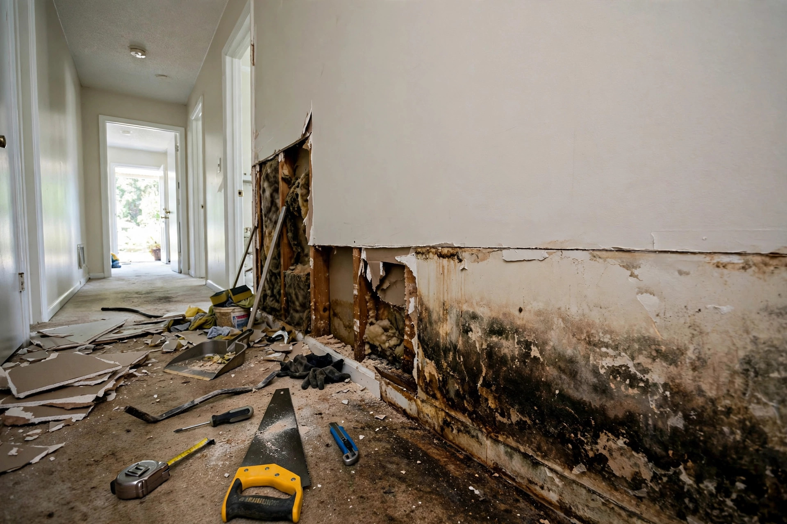

Water Damaged Drywall Repair in Kuna, ID
Drywall wicks water upward like a candle wick — and once the paper facing stays wet past a day or two, no amount of drying restores it. Kuna's flood events, pipe bursts, and hardpan-driven seepage all end at the same place: a straight flood cut, verified drying, and a rebuild that vanishes into the wall.

Flood cuts done right
Map the wet line
Pin meters find how high water wicked — the visible stain is rarely the full extent. The cut line goes above the highest wet reading, not the highest stain.
Cut straight and clean
A level flood cut keeps the repair simple and the new board seam tight. Jagged tear-outs cost more to finish.
Dry the cavity
Insulation that got wet comes out. Framing dries with airflow until readings confirm — new board never goes over damp studs.
Rebuild invisible
New board, tape, mud, texture match, prime, paint. Kuna's common knockdown and orange-peel finishes are matched, not approximated.
When to call versus when to watch
Call now: soft, sagging, or smelly
Drywall that gives under finger pressure, sags between studs, or smells musty needs opening promptly — delay grows the repair.
Watch: a dry, stable stain
An old, hard, dry discoloration with no odor can wait for a scheduled visit — but confirm the source is truly historic first.
A hallway flood cut
Typical scenario (illustrative example — not a past job)
A supply line to an upstairs bathroom splits in a Kuna two-story, and water runs down inside the wall into the hallway below. The drywall shows a stain three feet up — but the meter reads wet at four. The crew flood-cuts at four and a half feet, pulls the soaked insulation, dries the studs for two days, then hangs, tapes, and texture-matches the whole run so the hallway looks untouched.
Protecting the new walls
Know your shutoffs
Every adult in the house should know where the water main and fixture shutoffs are. Most Kuna water damage we see would have been smaller with a faster shutoff.
Watch the baseboards
The bottom inch of drywall shows trouble first — discoloration, swelling, or a musty smell at the baseboard line means check behind it.
Maintain caulk and grout
Failed shower grout and tub caulk are the top slow-leak sources in Kuna's two-story homes. A yearly check takes ten minutes.
Grade and extend
Downspouts six feet out, soil sloping away — the hardpan under Kuna makes exterior water management the cheapest insurance you have.
When drywall must go
Staining that returns after dryingMarks that reappear signal the paper facing is compromised — it will not hold paint evenly.
Soft or crumbling boardGypsum that lost its structure cannot be restored; it gets replaced.
Musty odor from the wallSmell means microbial activity in the cavity — the board comes out so the framing can be checked.
Swelling at the baseWicked moisture swells the bottom edge permanently; sanding will not fix it.
Straight cuts, invisible repairs
We find the true wet line, dry the cavity, and rebuild so you cannot tell it happened.
Open 24 hours · Kuna and the Treasure Valley